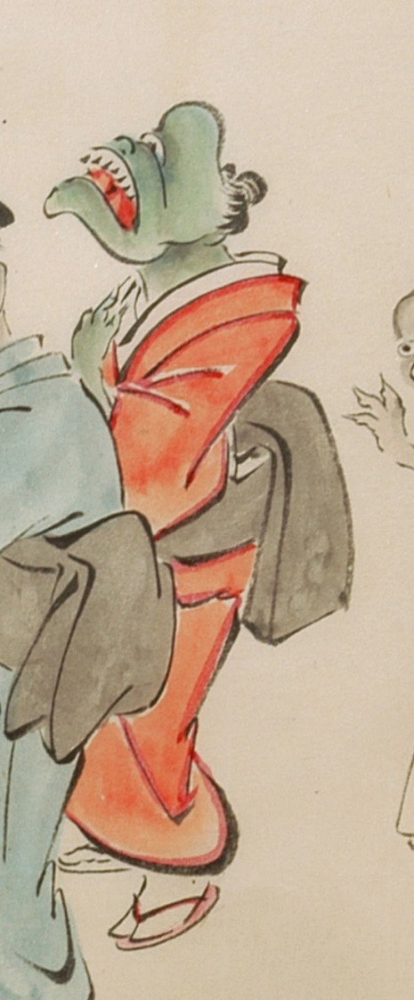

赤色の着物に黒色の帯を締めた化物。肌は緑色で、額は突き出ており、一つ目のように見える。鼻は小さく、顎が大きく、開けた口の上顎に牙が並んでいる。手は3本指で鋭い爪が生えている。足袋と草履を履いている。
出典：親書誌：U426_nichibunken_0053：化物婚礼絵巻；バケモノコンレイエマキ／日付：2006／資源識別子：U426_nichibunken_0053_0023_0002
Copyright (c)2010- International Research Center for Japanese Studies, Kyoto, Japan. All rights reserved.